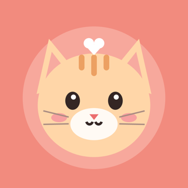

CatTend builds a care routine for your cat from a short set of questions: feeding, litter, play, grooming, deworming, flea treatment and weigh-ins, with reminders at the right times. Keep photos and clips of your cat's moments, log weight and medical records in the Health tab, and follow step-by-step training journeys. Your data stays on your device and in your own private iCloud.
Contact: bilgisianlam@gmail.com